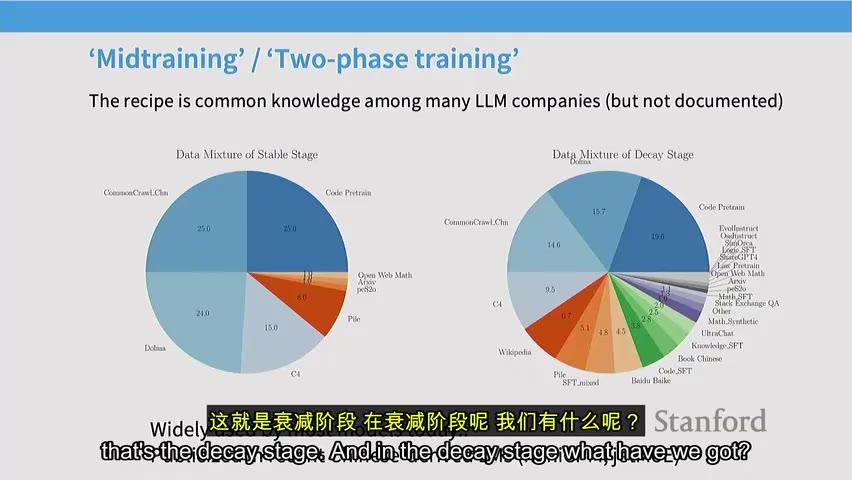

原视频 · 在线回看
点击后联网加载 B 站播放器；本地不下载整段视频。

原视频 · 在线回看
点击后联网加载 B 站播放器；本地不下载整段视频。
来源：AI翻译君-vanch｜斯坦福 CS336 第 15 讲：SFT 与 RLHF · 1 小时 14 分 51 秒 · 深度阅读
给模型一个复杂要求：把几组信息画成图，使用指定的配色与布局，还要遵守若干相互关联的条件。今天我们很容易把它能写出绘图代码当成理所当然。但一个能够流畅续写文字的预训练模型，并不天然就会稳定遵守这些要求。预训练让它从大量资料中学到广泛的规律与能力，接下来还要让它在面对用户时，以我们希望的方式使用这些能力。
这一步涉及后训练，也涉及这里所说的“对齐”：让模型的行为更符合人的任务要求与使用规范。除了完成任务，我们还希望它在不知道时不要编造，在不适合提供帮助的情境下妥善拒绝，同时不误伤正常请求。把这些要求写进一句提示词容易，要让模型在大量新情境里持续做到，就需要数据、训练方法和评价标准共同配合。
先沿着一个实际过程往下看。我们可以请人写出好回答，让模型学习；也可以让模型先生成几份回答，请人判断哪份更好，再利用这些比较调整模型。前一条路是监督微调，后一条路通向人类反馈强化学习与直接偏好优化。它们最重要的区别，是我们交给训练过程的信号分别是什么。
SFT 是 Supervised Fine-Tuning，监督微调。我们准备“输入指令—期望回答”的样本，让模型提高生成这些示范回答的可能性。对模型而言，一份回答仍然是一串 token，也就是分词后用于处理文字的单位。训练会比较它在各位置的预测与示范内容，通过更新参数减少差距。
想象数据里有一条“请为这封邮件写主题”，后面接一个合适的邮件主题；另一条要求总结文章，后面接一份准确摘要。模型会从这些样本学习怎样识别要求、怎样回应，以及采用什么输出形式。数据也可能包含多轮对话，让它看到后续提问如何依赖前面的交流。这个过程的直接性很有吸引力：把想要的行为展示出来，然后训练模型模仿。
但是，第一步就遇到难题：示范从哪里来？我们需要的远不止一个模板。真实用户可能提问、比较、追问、要求改写，也可能同时提出好几个限制。若训练数据只覆盖少数固定题型，模型学到的助手行为也容易受限。不同的数据收集方式，会让我们得到相当不同的一批任务和回答。
FLAN 采用的一条路径，是汇总已经存在的自然语言处理任务，再把它们写成指令形式。比如给一段新闻，让模型从几个类别中判断主题；给一封邮件，让模型生成主题；给一条餐厅数据库记录，让模型写成自然语言介绍。原来各自独立的任务，被整理到一个较大的指令集合里。
这类数据的优势很直观：已经有大量输入和目标输出，可以覆盖许多操作。但它的形态也带着原任务的痕迹。分类问题可能只要回答一个词，数据库描述任务可能只要生成一句话，而普通聊天中，用户常常希望得到解释，甚至继续追问。任务种类多，与对话体验自然，是两个需要分别检查的条件。
Alpaca 的早期做法，是从一小批人工编写的种子指令出发，让语言模型生成更多指令及回答。相较于传统分类任务，这些输入更像人会直接发给聊天助手的问题，回答也更常是完整自然语言。不过，合成过程可能带来新的限制：指令较短、类型较集中，回答形式也容易继承生成模型的习惯。扩大条数以后，仍要检查有没有真正扩大任务覆盖。
OpenAssistant 则包含人工参与编写的对话与回答。这里能看到更复杂的问题、详细解释，有些回答还附上参考资料。它体现了人工创作的价值，也体现了成本：写出一份有根据、结构清楚、细节充分的回答，需要时间和能力，无法只用“请给一个高质量答案”就稳定获得。
| 数据来源 | 容易获得的内容 | 特别需要留意的差别 |
|---|---|---|
| 汇总现有任务，如 FLAN | 大量已经定义清楚的输入与目标 | 基准题型与真实对话之间的距离 |
| 模型合成，如 Alpaca | 能较快扩展的指令和自然语言回答 | 指令覆盖、错误传播、表达同质化 |
| 人工编写，如 OpenAssistant | 复杂问题、细致解释、人的具体判断 | 写作成本、质量差异和核实难度 |
没有哪一种来源只带来好处。数据的收集方式，会影响问题长度、答案长度、用词、知识范围和表现出来的行为。选择数据时，应该逐条看看模型到底会接触什么，不能只凭数据集名字和总条数判断它是否适合自己的任务。
课堂上的第一个练习，让学生用有限时间写一份指令回答。参与者本身很有动力，也有一定知识背景，但提交结果仍然包含简短回答、风格差异很大的内容，甚至与任务无关的句子。还有些特别完整的长回答，看起来明显借助了聊天模型。
这个练习把一个常被忽略的条件摆到了面前：写出值得模型学习的示范，本身就是一项工作。即使你知道问题的答案，也要花时间组织结构、补齐条件、检查事实，让陌生读者能够跟上。时间太短时，人更容易给结论，省去解释；如果任务鼓励“看起来专业”，又可能出现华丽但无助理解的表达。
因此，人工数据的质量与任务设计、时间安排、报酬和审核方式都有关系。使用模型生成或辅助修改，可以减轻一部分写作负担，但不能省掉判断生成内容是否合用的环节。数据收集的困难会直接影响模型：我们提供什么样的示范，它就可能学会什么样的回应习惯。
长度也是这种习惯的一部分。不同数据集的输入和回答长度相差很大，模型会受到影响。一些人类评价和模型评价又偏爱较长、分点较整齐的回答，于是训练可能把“更长、更像完整答案”当作一种优势。这里要检查的是长度是否真的服务理解：完整解释当然需要篇幅，但多几段未经核实的信息，也可能只让答案显得丰富。
所以评价时需要不止一种角度。聊天偏好比较可以反映用户愿不愿意读，知识或任务基准可以检查某些具体能力。两者都重要，单靠其中一项，就可能遗漏另一个方向的问题。一个回答阅读感受很好，却包含错误事实；另一个正确但难懂，也同样没有完全达到助手的目标。
来看买方垄断这个例子。示范回答准确解释一个经济学概念，并在末尾列出相关参考文献。模型学习这条样本时，可能获得两种不同规律。第一种是“这个概念与这份真实文献有关”；第二种是“回答复杂概念以后，应当在末尾放一个参考文献”。第一种关系涉及具体知识，第二种只涉及输出形式。
当模型遇到另一个自己不熟悉的概念时，第二种规律可能更容易延续。它知道此处应该出现像参考文献的东西，却不知道真实的书名、作者或出处，于是生成一段外形像引用的文本。结果看起来比没有引用更完整，内容却可能是虚构的。训练数据里的引用本来没有错，错误来自模型在新情境里采用了不可靠的模式。
为什么监督训练会允许这种情况？训练直接比较生成的 token 与示范 token。假如示范在某个位置包含引用，模型完全停下来不写，无法匹配那一段；它写出一段类似格式，至少可能学会部分结构。仅靠模仿目标文本，并不会自动让模型区分“我确实知道这条引用”和“我只是知道这里通常应该有引用”。
这也引出课堂中的反问：引用本身是有用的，能否给模型查询工具，让它先查再引用？这个方向合理。问题在于，训练任务是否真的教了查找与核实，模型是否能够可靠获得相应事实。如果仍然只要求它直接生成参考文献，工具的存在并不会自动改变训练信号。我们需要把想让模型采取的实际行为放进任务设计里。
同样的区别也出现在表情符号问题中。大量示范在结尾放表情，模型很容易学会“结尾要有表情”；至于表情与当前语境是否恰当对应，是更细的规律，需要足够合适的数据来支持。格式容易模仿，语境中的正确关系需要额外学习。引用例子之所以更严重，是因为错误格式背后会变成虚假的知识承诺。
从引用问题不能推出“SFT 只能改风格，不能学知识”。只要训练规模与数据多样性足够，指令数据也能够传递新知识。难点在于，小规模指令微调通常很难稳定教会大量原先没有的事实，同时还要确保模型在不知道的地方表达不确定。模型原有能力、材料内容与训练量之间，需要有合适的匹配。
这也解释了为什么预训练和后训练之间的界限逐渐模糊。一个常见思路是，在预训练后段加入高质量、问答或指令相关的数据，随后再做较短的专门微调。中间这部分常被称为 midtraining，中期训练。它仍然处理文本序列，但数据组成开始更贴近希望模型掌握的任务。
MiniCPM 的两阶段示例很好理解。前一阶段主要混合网页、代码等预训练资料；后一阶段保留部分原有数据，同时增加知识、问答和指令相关材料。数据并没有在某一天突然从“全部预训练”变成“全部指令”，几个来源可以在同一阶段共同出现。
把较大规模的任务数据放进这个过程，有助于更充分地利用材料，同时需要考虑避免遗忘原有能力。所谓灾难性遗忘，是模型为了适应新任务而明显损害此前已经具备的能力。但数据混合不会自动解决编造引用的问题：模型是否掌握具体事实、训练是否鼓励在缺乏依据时硬答，仍然需要单独处理。
因此，看到一个模型被命名为 base，也不能仅凭名称断定它从未接触指令或问答数据。了解模型经历了什么训练，需要看实际的数据混合与阶段说明。对于没有公开的部分，只能保留未知，不能把简短标签当成完整训练历史。
除了完成一般任务，还需要专门展示安全行为。只教模型回答普通知识问题，并不会自然覆盖什么时候应该拒绝。适量、经过设计的安全样本，能够明显改变行为，但评价不能只看拒绝次数。拒绝真正有害的请求，与保留正常帮助能力，应同时成立。
“如何杀死一个 Python 进程”就是一个直观例子。在编程里，这句话通常指结束正在运行的程序，是正常技术问题。只抓住“杀死”这个词，模型就可能把它误判为危险请求。这样的过度拒绝虽然看上去很谨慎，却没有理解用户在做什么。
反过来，有害目的也未必包含显眼的危险词。安全判断因此需要结合对象、上下文和预期用途。训练数据要让模型接触这类区别，评测也要同时覆盖应该拒绝与应该正常回答的情况。仅把拒绝率提高，不能单独代表安全能力提高。
到这里，我们一直在准备示范，让模型模仿一个已有答案。另一条路是先让模型生成，再对生成结果作评价。这样，标注者不用从空白开始写一篇理想回答，只需要比较几份已有回答，说明哪一份更符合要求。这个过程可以利用人的判断能力，同时减少部分创作负担。
课堂讨论过一项摘要研究：一些撰写摘要的人，在比较时反而更喜欢模型生成的版本。有人解释，自己写作时觉得必须使用较华丽的词语，读到更顺畅的模型摘要后才发现，那种表达更符合自己的阅读偏好。能认出一份好答案，与能独立写出同样好的答案，确实可能存在差距。
这就是偏好反馈的一个动机。我们可以让人选择同一问题下的回答 A 或 B，再让训练过程利用这种相对好坏关系。这里的反馈仍然有主观性，也可能包含错误，但它能够表达“我更愿意接受哪一种结果”，无需把所有偏好先写成一份唯一标准答案。
从建模角度看，目标也发生了变化。监督微调主要提高示范文本出现的可能性；强化学习把模型看作一个生成策略，希望它产生能获得更高奖励的回答。策略这个词可以先理解为：面对给定输入，模型会以怎样的概率生成不同输出。
经典 RLHF 流程包含三个相关环节。先通过监督微调得到能够合理回应的模型；再收集同一问题下多个回答之间的偏好，用这些比较训练奖励模型；最后，让语言模型继续生成回答，利用奖励模型的评分来调整语言模型。奖励模型是一个学出来的评价器，它尝试预测哪些结果更符合标注偏好。
一条偏好数据可以包含一个问题、两份回答和选择结果。奖励模型为每个回答给出一个分数，训练时希望被选中的回答相对得分更高。等它能够在更多回答上作评价，就不必为语言模型每次新生成的内容都立即请人打分，从而使后续优化更容易扩大规模。
但这个替代也带来了责任转移。奖励模型学到的是有限标注所体现的规律，无法保证每次评分都代表真实质量。若人类比较时偏爱长度或格式，奖励模型可能把这些特征继续当成好答案的信号。后续语言模型越努力提高奖励，越可能重复这些受到鼓励的行为。
因此，标注指南需要把“好”展开。InstructGPT 的例子包含有用、真实和无害：回答用户真正的问题，表达清楚，缺少信息时澄清，不编造事实，同时避免造成伤害。例如用户说 football，不同地区可能理解成不同运动，助手需要留意背景。三个词看起来简洁，落实到具体问题时却会有许多细节和取舍。
第二个课堂练习要求学生在几分钟内比较回答。之后再问：有没有核实所有事实？有没有检查计算？能够真正完成这些工作的参与者很少。较长的答案仍然获得了不少选择，而一些较短版本恰恰是删去虚构内容之后得到的。
这让“看起来内容更多”的问题变得具体。较长答案提供更多细节、语气完整，读者容易认为它更用心；但是，每增加一条事实，也增加一项需要检查的内容。要认真判断，就得把长回答拆成若干主张，逐项查它们是否成立。只给很短时间，标注者很难完成全部核实，只能依赖容易观察的特征。
所以，判断通常比独立生成容易，却仍可能很难。数学题需要重新计算，知识回答需要查证，安全问题需要理解情境。任务时间、标注者的专业能力与报酬安排，都影响比较结果的质量。让人对着两个窗口点一下，看起来是简单操作，背后要求的认知工作可能相当多。
这里也不能把课堂现象推成“人都喜欢错误的长答案”。比较发生在有限时间和具体材料下，它揭示的是一种容易出现的偏差。长文章若把事实、条件和解释讲完整，会真正降低理解负担；问题出在把长度本身当成质量证明，跳过了内容检查。
高质量人工标注难以大量收集，推动了 AI 反馈的使用。一个较强模型可以比较候选回答，给出选择，或者按多个标准评分。一些研究与开放模型项目观察到，这样得到的反馈可以与人类判断较接近，同时成本更低；但这种接近依赖任务、模型与标注标准，不能当成对所有领域的保证。
AI 评价器也可能偏爱较长回答，或者更喜欢与自身输出风格接近的文本。把生成与评价都交给模型，不会自动消除原先的偏差。尤其在模型评价自己的回答时，需要留意它是否把熟悉的写法误当成更好的内容。
人工标注同样受背景与动机影响。有的标注者更注重事实，有的更关注格式。关于不同人群偏好与模型立场的观察，可以提醒我们检查代表性，但观察到相关性，仍不足以把具体立场归因到某个群体。重要的是知道反馈来自谁、他们接受了什么指导、在什么条件下作判断。
还有一个问题：能否给评价者参考资料或已知答案，降低核实负担？这样做确实可能有帮助。对答案清楚的数学或代码任务，可以进一步使用可验证结果；开放式回答则往往有多种合理表达，还可能包含参考答案未提到的新事实。参考资料能支持评价，仍然不能把所有判断都化为一次简单匹配。
有了奖励模型，我们希望语言模型更容易产生高分回答。但如果只追求这个评分，模型可能利用评价器的弱点，逐渐远离原先合理的语言与助手行为。所以，经典目标还加入一个限制：提高奖励的同时，不要过度偏离参考模型。参考模型通常是开始这一轮优化前的模型。
把输入记为 ，回答记为 ，当前生成策略记为 ，参考策略记为 。在一个给定输入下，可以用下面的简化目标表示这种取舍：
第一项表示按照当前模型生成回答时，平均能得到多少奖励。第二项衡量当前模型与参考模型的生成分布相差多大，并把这种偏离作为代价。 叫 KL 散度，可以先理解为一种比较分布差异的量； 决定对偏离的约束有多强。
这里的约束不等于真实性保证。参考模型可能本来就会犯错，奖励模型也可能误判。它主要防止优化在提高分数时变化过猛。InstructGPT 的完整目标还包含继续利用预训练数据的项，用来兼顾原有能力；上式先保留奖励与参考约束这条主线，方便理解后面的算法。
标注者通常没有给每份回答一个绝对真实的质量分数，只告诉我们 A 比 B 更好。Bradley–Terry 模型提供了一种把分数差与偏好概率联系起来的方式：A 的潜在分数越高于 B，A 被选择的概率越大。
这里的 把任意大小的分数差转成 0 到 1 之间的概率。如果两个分数相同，选择概率为一半；A 的分数明显较高，就更可能选择 A。这个模型允许相同回答对在不同人那里出现不同选择，因此偏好不必被当成没有噪声的确定规则。
训练奖励模型，就是调整它给出的分数，使已经收集到的偏好比较更容易出现。这个分数是为了拟合比较而学出来的，不能把它直接读成事实正确率。一个高分回答，只说明评价模型较偏好它，真实质量仍需要结合评价器的能力和偏差来看。
策略梯度的基本直觉是，模型先生成回答，再依据奖励调整生成倾向。一个回答带来更好的结果，就提高相应行为的可能性；结果较差，就降低这种倾向。真正实现时会使用梯度，也就是参数朝哪个方向改变能够改善目标的信号。
为了让更新更稳定，常常不会直接使用原始奖励，而会考虑优势：某次结果比一个基准好多少。减去合适的基准，有助于减少奖励波动带来的影响。模型随后变化了，但我们可能还想多次利用此前采样的回答，这就需要处理“数据由旧策略生成，参数已更新”的差别。
PPO，近端策略优化，通过概率比及裁剪等设计限制更新过猛。概率比比较同一个输出在新旧策略下有多大可能出现；裁剪则限制某些过大的变化继续带来优化收益。实现涉及采样、评分、优势估计和多次更新，系统复杂度较高。理解这里时，先抓住它在协调“利用已有尝试”和“不要一步走太远”即可。
如果我们已经有了成对偏好，能否省掉先训练独立奖励模型、再运行复杂强化学习循环的步骤？一种朴素做法是只学习被选中的回答，但它没有充分使用“这份为什么相对另一份更好”的信息。DPO 的关键在于，从带 KL 约束的奖励目标出发，推导出奖励与最优策略之间的关系，再利用这层关系直接优化偏好对。
在不受具体神经网络形式限制的理论条件下，最优策略会以参考分布为基础，提高高奖励回答的权重。反过来，可以用当前策略相对于参考策略的概率变化，表示一个隐含奖励。同一个问题下比较两个回答时，一些与回答无关的项会抵消，剩下的量就能放进前面的偏好概率模型。
因此，DPO 的训练可以直接比较：相对于参考模型，当前模型对被选中回答提高了多少倾向，对未被选中回答又提高了多少倾向。优化希望前者获得更有利的相对变化。这里依然包含参考模型，不能简化成无条件提高好答案概率、任意压低坏答案概率就完全等价。
DPO 的工程吸引力是，标准离线训练可以直接使用已经准备好的偏好对，不需要在每次训练更新中重新采样回答，也无需单独拟合一个显式奖励模型。关于这一步的原始方法说明，可参见 DPO 论文。流程简化以后，数据中的偏见、错误选择与覆盖不足仍然存在，算法无法替我们重新定义什么叫好回答。
SFT 用示范教模型怎样回应，RLHF 利用比较训练奖励，再让模型朝高奖励行为调整，DPO 则把偏好比较直接用于策略优化。三条路径都围绕同一个困难：怎样把人的要求变成模型可以学习、又不容易误解的信号。
贯穿整节课的例子提醒我们，模型会学习数据里容易抓住的规律。参考文献可能被学成格式，较长回答可能被当成优质，安全词汇可能被误当成拒绝依据。要让结果真正可靠，就需要区分表面形式与它本来应该表达的关系，再用合适的数据和评价方式检查模型有没有学到这层关系。
先想引用：模型输出了参考文献，为什么还不能说它学会了引用？再想课堂比较：人选择了一份更长的答案，为什么还不能说这份答案事实更准确？最后想 Python 进程：模型拒绝了带有危险词的请求，为什么还不能说它正确理解了安全边界？
三个例子都要求我们检查行为背后的关系是否成立。理解了这一点，再回头看数据、奖励和算法，就能分清哪些问题可以通过训练方式改善，哪些问题仍然需要重新设计示范与评价标准。